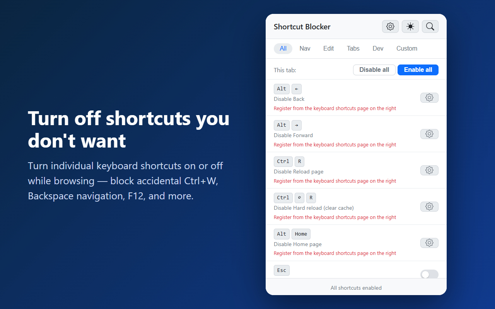

Shortcut Blocker
邪魔なショートカットをオフ
邪魔なキーボードショートカットを個別にオン／オフ。誤操作の Ctrl+W、Backspace での戻る、F12 などをブロックできます。
Chrome・Edge 対応 · データ収集なし · オープンソース

邪魔なショートカットをオフ
邪魔なキーボードショートカットを個別にオン／オフ。誤操作の Ctrl+W、Backspace での戻る、F12 などをブロックできます。
Chrome・Edge 対応 · データ収集なし · オープンソース
